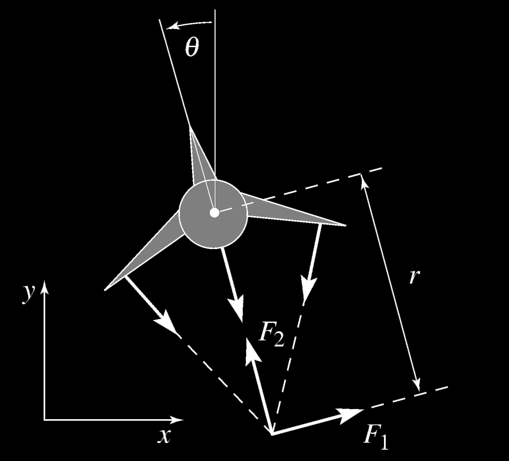
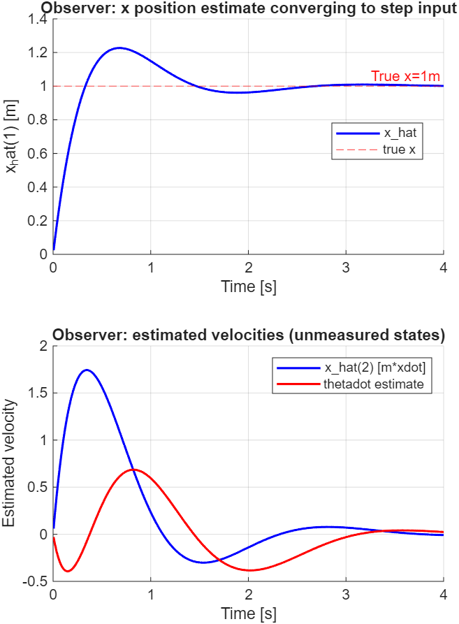

Project introduction

VTOL aircraft are typically underactuated, meaning two thrust inputs control three degrees of freedom (x, y and pitch), so to move sideways the aircraft has to tilt first. Only position and pitch could be measured, so all three velocities had to be estimated.
The controller holds the aircraft in hover and flies take-off, traverse and landing missions. It was tested against a black-box simulator with hidden parameter error, a steady crosswind and Gaussian sensor noise.
Major design choices
- LQR state feedback. One optimal gain handles the coupled position and pitch dynamics without placing six poles by hand. Weights come from Bryson’s rule (1 m, 0.5 rad, 15 N), so tuning is done in physical units.
- Integral action. Probing the black box showed the crosswind pushed the aircraft off position indefinitely. Position-error integrators remove that drift, and anti-windup stops them winding up near the ±50 N thrust limit.
- Kalman filter over a Luenberger observer. Its gain comes from the model and sensor noise levels instead of hand-placed poles, so it weighs the model against the noisy measurements optimally.
- Cosine-ramp references instead of steps. A step demands a huge acceleration at the start and saturates the thrusters. A ramp starts and ends at zero velocity, at the cost of slower moves.
Design
- Model: symbolic Jacobians of the 6-state nonlinear model about hover, discretised with a zero-order hold at 5 ms. A first-order Euler check differed by at most 4.9×10-4.
- Decoupled gain: the LQR gain came out naturally split, with horizontal thrust acting on x and pitch and vertical thrust acting only on y. Closed-loop time constants are 0.14–0.49 s.
- Observer speed: the Kalman filter is faster than the controller, so estimates settle before the controller relies on them. The separation principle guarantees the combined loop is stable.
- Waypoint mode: chains ramps together into take-off, traverse and landing missions.
Results
- Stable hover for 60 s in crosswind: vertical error near zero, lateral error bounded within about ±0.15 m.
- Small attitude excursions: pitch stayed within a few degrees, well inside the ±15° linearisation limit.
- No actuator saturation in hover or during the waypoint mission.
- Fast estimation: the Kalman filter converged on position within 3 s and on velocities within 4 s.



Future developments
While most of these points were outside the scope of the projects criteria, given unlimited design authority (and maybe a few more weeks to submit the assesment), if i were to do the project again i would investigate these points;
- Path-planning layer. Generating trajectories with attitude references built in would keep diagonal moves straight instead of arcing. In the report I blamed these arcs on the simulated wind, however its possible they are rather caused by other factors.
- Wider disturbance testing. During the assignment, colaborating with classmates (while remaining within all accademic misconduct rules) it was discovered that student number was used as a seed for wind strength, meaning some studnets had a significantly higher ammount of disturbance than others. For further testing, this seed shouldve been investigated, to guage if the model can adapt to conditions.
- Automated LQR tuning. A script sweeping Q and R to find the best tune. Useful, but the current tune already meets every requirement, so it is a refinement.
- Nonlinear MPC. Would handle the full dynamics and thrust limits directly and allow aggressive manoeuvres. Not necessary for hover and gentle missions, and far heavier to compute.